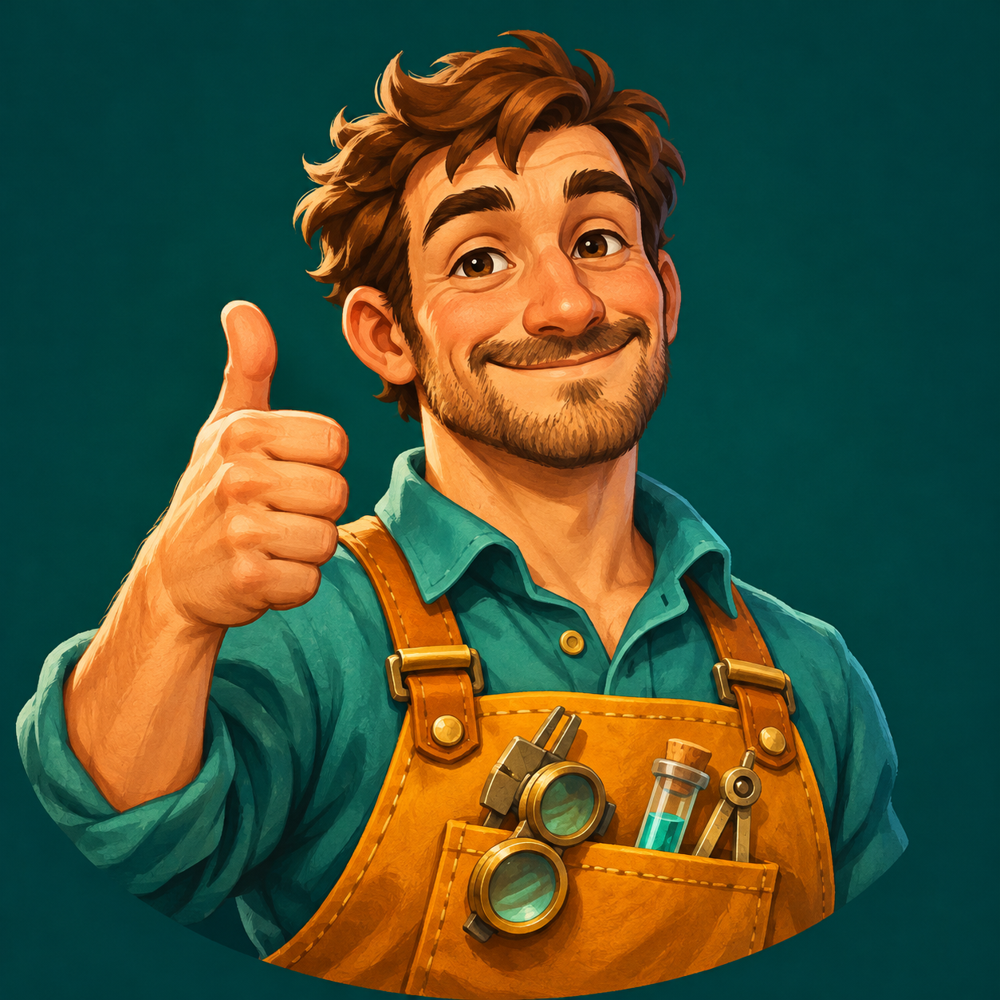

Andris Monsterlabor
👾 Besiegte Monster: 0
♫ Musik an
Soundtrack
Original
Zweite Option
Dritte Option
Vierte Option

🐾 Haustierzimmer
🏠 Laborzustand
🏠 Laborzustand: 100 / 100
🍳 Küche und Essensvorrat
Hole Items und baue Maschinen. Monster greifen ab Assistent an!
🐾 Rechentipp
Bis du eine Antwort einreichst: alle 5 Sekunden −5 Prozentpunkte Ladung. Tippen und Klicken stoppen die Zeit nicht.
Ladung: 50 %
Bei leerem Balken verlierst du bis zu zwei Items aus deinem Vorrat.
Balken voll – gut gemacht!
Well done!
·
Bravo !
·
Bravissimo!
·
เก่งมาก!
Nächste Aufgabe
Zurück zum Start
🔄 Janosch Tausch
Gib Janosch ein Essen und erhalte ein anderes. Es gilt: 1 gegen 1.
⚗️ Element-Nachschub
Nachfüllpreis nach fehlenden Portionen: 1–5 → 2 Essen; 6–8 → 1 Essen + 1 Item + 1 Pokal; ab 9 → 2 Essen + 2 Items + 2 Pokale. Alle Vorräte werden auf 6 gefüllt. Das oben gewählte Essen wird zuerst verwendet; falls nötig kommt ein anderes dazu. Die genaue Bezahlung steht unten.
Alle Elemente auf 6 auffüllen
Zurück zum Labor
🏗️ Labor umbauen
Bei 100 % Laborzustand: Chemielabor öffnen. Danach kommen ab Assistent zwei Monster pro Angriff statt einem. Der Umbau kostet 10 normale Items, mit einem lebenden Minion nur 5.
⚗️ Chemielabor öffnen
⚗️ Dein virtuelles Chemielabor
Alle 118 Elemente zum Auswählen. Erhitzen ist für Aluminium, Eisen, Kupfer, Silber, Gold und Platin verfügbar.
Schmelzpunkt heisst: Bei dieser Temperatur beginnt ein reiner Stoff zu schmelzen. Wir betrachten die Probe bei normalem Luftdruck, ohne Reaktionen mit Luft.
Zwei getrennte Schalen zum Vergleichen. Nebeneinanderstellen bedeutet hier kein Mischen. Für nicht unterstützte Versuche wird keine Reaktion erfunden.
Startvorrat: 6 Portionen von jedem Element. Eine neue Probe kostet 1 Portion. Erhitzen derselben Probe kostet nichts zusätzlich. Beim Wechseln des Elements wird die alte Probe verworfen.
Nachschub bei Janosch: je nach fehlenden Portionen gegen Essen, Items und Pokale. Dort siehst du den genauen Preis.
Items herstellen: Schmelze Eisen oder Aluminium für Metallteile. Kupfer und 1 Plastik ergeben ein Kabel. Der Knopf übernimmt Formen, Abkühlen und bei Kabeln Isolieren als vereinfachte Spielaktion.
Was bildet dieses Modell ab?
Die Temperatur ist die Temperatur der Probe. Die Form zeigt den Zustand nach genügend Zeit zum Erwärmen; Erwärmungsdauer und Energiebedarf werden nicht berechnet. Genau am Schmelzpunkt können feste und flüssige Anteile nebeneinander bestehen.
Wasser und Luft: nur ein vereinfachter Rostversuch mit Eisen bei 20 °C. Die Zeitraffer-Ansicht zeigt keine bestimmte Reaktionsdauer. Reaktionen anderer Elemente, Gemische, Druckänderungen und radioaktiver Zerfall werden nicht simuliert. Besonders kurzlebige Elemente sind hier nur Auswahlkarten, keine haltbaren Proben.
Dies ist ein Bildschirmexperiment, keine Anleitung zum Erhitzen oder Mischen echter Stoffe.
Quellen:
Royal Society of Chemistry: Stoffdaten
·
RSC: Eisen und Rost
·
IUPAC: Elemente
Zurück zum Labor
🔧 Werkstatt öffnen
🎮 Zusatzspiele
🎯 Monsterschleuder – schliesse zuerst ein normales Level ab
📖 Deutsch-Monsterschleuder spielen
🏎️ Gwörk Kart
🏎️ Gwörk Kart
Du fährst das gelbe Auto. Richtig in höchstens 4 Sekunden: dein Auto wird schneller! Zu spät oder falsch: Die Monster werden schneller. Gewinne einen Pokal!
Bereit fürs Rennen?
Lenke mit Maus oder Finger am Lenkrad oder halte ← / →. Loslassen: geradeaus. Antwort anklicken oder Taste 1, 2 oder 3 drücken. Auf der Wiese bremst dein Auto.
Rennen starten
Zurück zum Labor
🎯 Monsterschleuder
Ziehe den gelben Ball nach links unten und lass los. Die Punkte zeigen die Flugbahn. Braune Holzteile und blaue Glasscheiben zerbrechen bei einem Treffer. Triff alle Monster!
Spielmodus
Monsterburgen – zuerst eine Rechenrunde
Deutsch – finde den Fehler
Ein Satz, ein Fehler: Triff das Monster mit der richtigen Korrektur. Belohnung: ein Sammelitem. Bier, Wurst, Friedrich-Schmerz-Figur oder Kartoffel; sehr selten ein Schweizer Kreuz (1 %). Das Bier ist hier nur ein Bauteil, kein Essen.
Schauplatz
1 · Monster-Aussenposten
2 · Monsterturm 🔒
3 · Monsterstadt 🔒
4 · Monsterburg 🔒
5 · Monsterwald 🔒
Winkel
Kraft
Schuss!
🧮 Weiterrechnen und nächstes Level öffnen
Noch einmal
Zurück zum Labor
⭐ Zusatzlevels – ab Assistent
Zusatzlevels
🐾 Haustierhilfe
Fülle den Balken mit drei richtigen Antworten und gewinne einen Schlüssel!
🔑 Schlüssel: 0
Wähle eine Stufe, dann ein Level
Stufe 1 – leicht
Stufe 2 – mittel
Stufe 3 – schwer
Brüche addieren
Quadratzahlen
Prozente
Gleichungen
Umfang
Einheiten
Quader-Volumen
Nächste Aufgabe
🧮 Taschenrechner
Zurück zum Labor
🐾 Dein Haustierzimmer
Jungtiere helfen sofort. Nach 30 Minuten sind sie erwachsen und du bekommst einen zweiten Platz. Maximal zwei Tiere.
Tierhunger: −2 pro Minute. Ohne Futter sterben Tiere bei 0 Sättigung; spätestens mit 6 Stunden. Die Zeit läuft auch in anderen Spielbereichen weiter. Neuladen setzt alles zurück.
Deine Tiere
Ein Tier aufnehmen
Zurück zum Labor
🍳 Deine Küche
Zukunftstag: Apfel · Lehrling: Brot · Assistent: Käse · Doktor: Kartoffel · Professor: Fisch · Da Vinci: Reis.
Belohnungen enthalten zufällig eine Zutat deiner gewählten Stufe oder einer tieferen. Kochen verbraucht die Zutaten und gibt ein sättigenderes Gericht.
Dein Vorrat
Rezepte
Zurück zum Labor
🔧 Deine Werkstatt
✨ Werkbank
🔑 Schlüssel: 0
Ein Schlüssel öffnet einen Tresor: magischer Stift oder magisches Papier!
🔒 Tresor öffnen – 1 Schlüssel
Verdiene Schlüssel in den Zusatzlevels.
🖊️ Ein Item zeichnen
Welches Item zeichnest du?
Zeichne mit Maus oder Finger. Deine Auswahl bestimmt das Item.
Zeichnung löschen
✨ Zeichnung verwandeln
Verbraucht: 1 magischer Stift + 1 magisches Papier.
Nach jedem Einsatz braucht deine Maschine Wartung. Gib das angezeigte Item ab, um sie zu flicken.
Deine Sammlung
Startpaket: Klopapierrolle, Batterie, Seil und Zahnrad. Gewinne weitere Items mit vollem Balken!
Die Sammlung bleibt bis zum Neuladen der Seite erhalten.
Zurück zum Labor